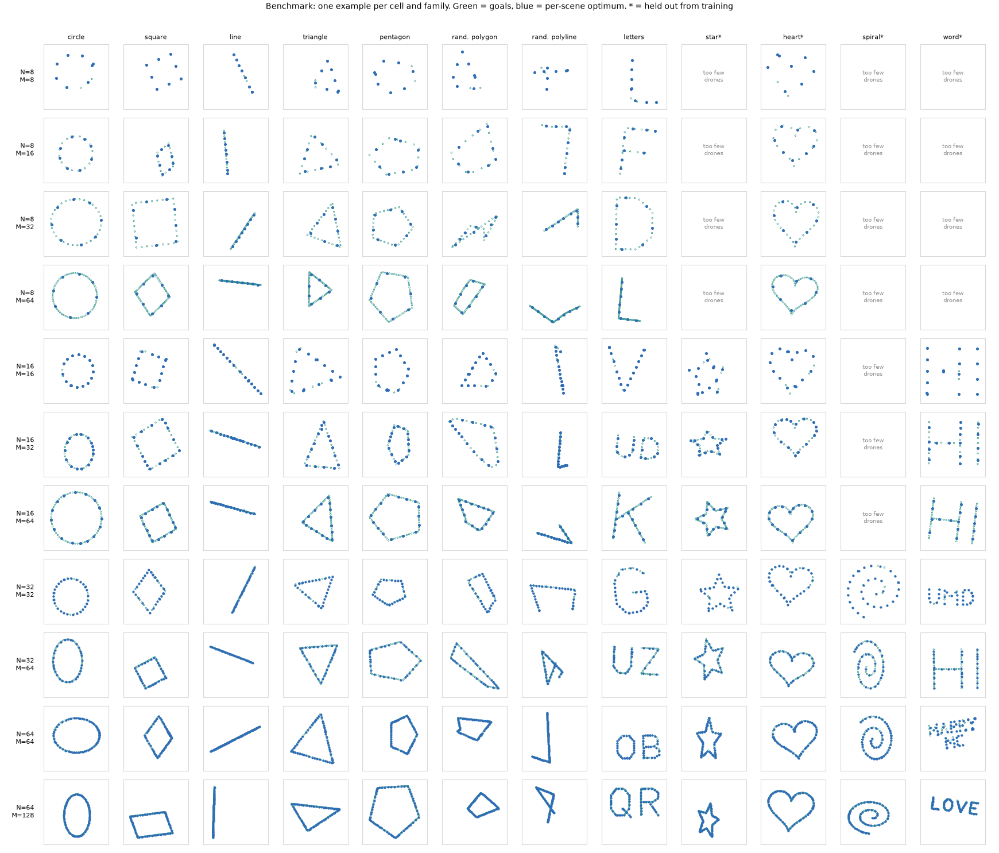
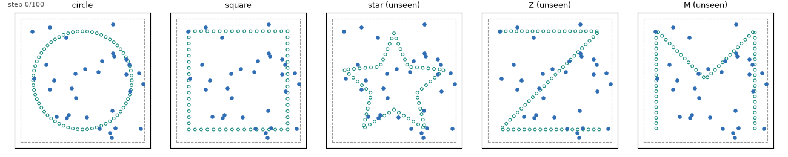
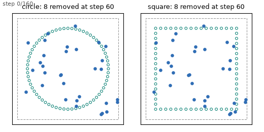
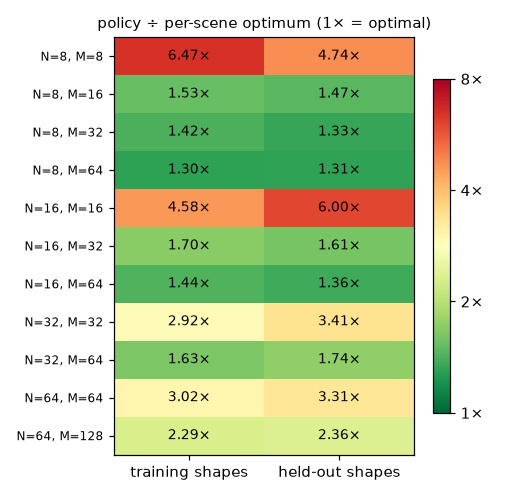
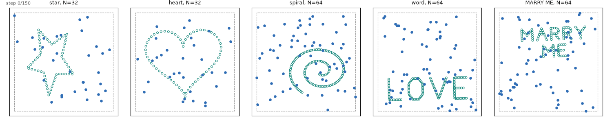
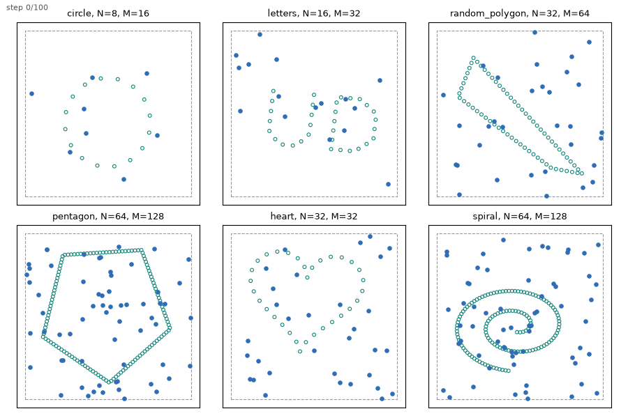
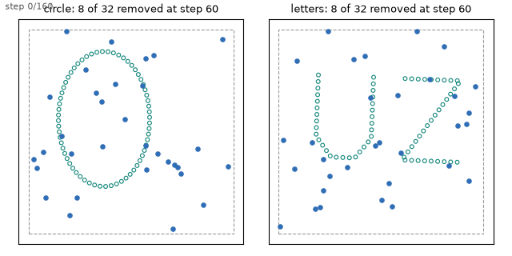
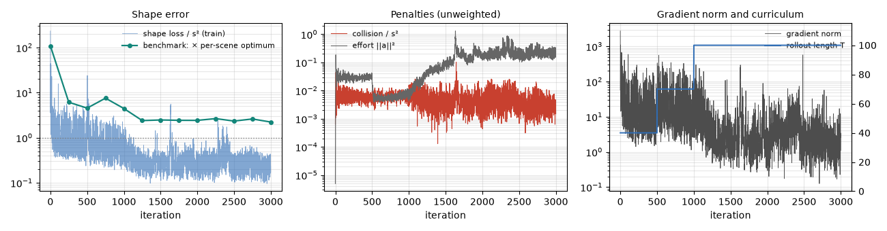

<meta charset="utf-8">
<title>Phase 2 Math</title>
<meta name="claude:viewport-fit-sides" content="cover">
<link rel="stylesheet" href="https://fonts.googleapis.com/css2?family=Space+Grotesk:wght@500;700&family=IBM+Plex+Sans:ital,wght@0,400;0,500;0,600;1,400&family=IBM+Plex+Mono:wght@400;500&display=swap">
<script>
  window.MathJax = {
    tex: { inlineMath: [["\\(", "\\)"]], displayMath: [["\\[", "\\]"]] },
    svg: { fontCache: "global" },
    options: { skipHtmlTags: ["script", "style", "textarea", "code"] }
  };
</script>
<script src="https://cdn.jsdelivr.net/npm/mathjax@3.2.2/es5/tex-svg.js" async></script>
<style>
  /* Layout: one reading column of derivations, a lab-notebook feel; one interactive figure for the loss */
  :root {
    --bg: #F7F8FA; --panel: #FFFFFF; --edge: #DCE1E8; --fg: #1C2430; --muted: #5A6578;
    --accent: #2F6DB5; --grad: #C2412F; --target: #13867A; --tint: #EAF1FA;
    --display: "Space Grotesk", system-ui, sans-serif;
    --body: "IBM Plex Sans", system-ui, sans-serif;
    --mono: "IBM Plex Mono", ui-monospace, Menlo, monospace;
  }
  @media (prefers-color-scheme: dark) { :root:not([data-theme="light"]) {
    --bg: #10151C; --panel: #171E27; --edge: #2A3340; --fg: #E4E8EE; --muted: #98A2B3;
    --accent: #78A9E8; --grad: #E8806C; --target: #45C2B0; --tint: #1A2636; color-scheme: dark } }
  :root[data-theme="dark"] {
    --bg: #10151C; --panel: #171E27; --edge: #2A3340; --fg: #E4E8EE; --muted: #98A2B3;
    --accent: #78A9E8; --grad: #E8806C; --target: #45C2B0; --tint: #1A2636; color-scheme: dark }

  body { background: var(--bg); color: var(--fg); font-family: var(--body); font-size: 16px; line-height: 1.65;
    padding-left: max(16px, env(safe-area-inset-left, 0px)); padding-right: max(16px, env(safe-area-inset-right, 0px));
    padding-block: 40px 80px; }
  main { max-width: 760px; margin: 0 auto; display: grid; gap: 56px; }
  header { display: grid; gap: 12px; }
  .eyebrow { font-family: var(--mono); font-size: 12.5px; letter-spacing: .08em; text-transform: uppercase; color: var(--accent); }
  h1 { font-family: var(--display); font-size: clamp(30px, 5vw, 42px); line-height: 1.1; margin: 0; text-wrap: balance; }
  h2 { font-family: var(--display); font-size: 24px; line-height: 1.25; margin: 0; text-wrap: balance; }
  h3 { font-family: var(--display); font-size: 18px; margin: 8px 0 0; }
  section { display: grid; gap: 14px; scroll-margin-top: 16px; min-width: 0; }
  p { margin: 0; }
  .lede { color: var(--muted); font-size: 17px; }
  code { font-family: var(--mono); font-size: .88em; background: var(--tint); padding: 1px 5px; border-radius: 4px; }
  mjx-container[display="true"] { overflow-x: auto; overflow-y: hidden; max-width: 100%; padding-block: 4px; margin: 4px 0 !important; }
  .answer { background: var(--panel); border: 1px solid var(--edge); border-left: 4px solid var(--accent); border-radius: 6px; padding: 18px 20px; display: grid; gap: 10px; }
  .answer strong { font-family: var(--display); font-size: 17px; }
  .note { font-size: 14.5px; color: var(--muted); }
  .why { border-top: 1px solid var(--edge); padding-top: 12px; font-size: 15px; color: var(--muted); }
  .why b { color: var(--fg); font-weight: 600; }
  .tbl { overflow-x: auto; border: 1px solid var(--edge); border-radius: 6px; background: var(--panel); }
  table { border-collapse: collapse; width: 100%; font-size: 14.5px; font-variant-numeric: tabular-nums; }
  th, td { text-align: left; padding: 8px 12px; border-bottom: 1px solid var(--edge); vertical-align: top; }
  th { font-weight: 600; color: var(--muted); font-size: 13px; letter-spacing: .03em; }
  tr:last-child td { border-bottom: 0; }
  td.num { text-align: right; font-family: var(--mono); }
  ol.algo { margin: 0; padding-left: 22px; display: grid; gap: 6px; }
  nav { display: flex; flex-wrap: wrap; gap: 6px 14px; font-size: 14px; }
  nav a { color: var(--accent); text-decoration: none; }
  nav a:hover, nav a:focus-visible { text-decoration: underline; outline: none; }

  /* interactive Chamfer figure */
  .lab { background: var(--panel); border: 1px solid var(--edge); border-radius: 8px; padding: 16px; display: grid; gap: 14px; }
  .lab-grid { display: grid; grid-template-columns: minmax(0, 1fr) 220px; gap: 18px; align-items: start; }
  @media (max-width: 640px) { .lab-grid { grid-template-columns: 1fr; } }
  svg#field { width: 100%; max-width: 440px; aspect-ratio: 1; display: block; margin: 0 auto; touch-action: none; user-select: none; }
  .readout { display: grid; gap: 10px; font-size: 14px; min-width: 0; }
  .stat { display: grid; gap: 2px; }
  .stat span { color: var(--muted); font-size: 12.5px; letter-spacing: .03em; }
  .stat output { font-family: var(--mono); font-size: 20px; font-variant-numeric: tabular-nums; }
  .stat.total output { font-size: 24px; font-weight: 500; }
  .controls { display: flex; flex-wrap: wrap; gap: 8px; }
  button { font: 500 13.5px var(--body); color: var(--fg); background: var(--bg); border: 1px solid var(--edge); border-radius: 6px; padding: 6px 12px; cursor: pointer; }
  button:hover { border-color: var(--muted); }
  button:focus-visible, input:focus-visible { outline: 2px solid var(--accent); outline-offset: 2px; }
  button[aria-pressed="true"] { background: var(--accent); color: var(--panel); border-color: var(--accent); }
  .toggles { display: grid; gap: 6px; font-size: 13.5px; }
  .toggles label { display: flex; gap: 8px; align-items: center; cursor: pointer; }
  .sw { display: inline-block; width: 18px; height: 0; border-top: 2px solid; }
  .sw.a { border-color: var(--accent); } .sw.b { border-color: var(--target); border-top-style: dashed; } .sw.g { border-color: var(--grad); }
  .diagram { overflow-x: auto; background: var(--panel); border: 1px solid var(--edge); border-radius: 8px; padding: 8px; }
  .diagram svg { display: block; width: 100%; min-width: 640px; height: auto; }
  .dg-box { fill: var(--panel); stroke: var(--edge); stroke-width: 1.5; }
  .dg-runner { fill: var(--tint); stroke: var(--accent); stroke-width: 2; }
  .dg-mod { stroke: var(--accent); }
  .dg-out { stroke: var(--target); }
  .dg-test { stroke-dasharray: 5 4; }
  .dg-loop { fill: none; stroke: var(--accent); stroke-dasharray: 5 4; stroke-width: 1.2; }
  .dg-title { font: 600 13px var(--mono); fill: var(--fg); }
  .dg-fn { font: 11px var(--mono); fill: var(--fg); }
  .dg-grad { fill: var(--grad); }
  .dg-note { font: italic 11px var(--body); fill: var(--muted); }
  .dg-loop-lbl { font: italic 600 11px var(--body); fill: var(--accent); }
  .dg-line { fill: none; stroke: var(--muted); stroke-width: 1.5; }
  .dg-head { fill: var(--muted); }
  .dg-lbl { font: 10.5px var(--body); fill: var(--muted); text-anchor: middle; }
  .dg-ret { font: 10.5px var(--body); fill: var(--target); text-anchor: middle; }
  figure.result { margin: 0; display: grid; grid-template-columns: minmax(0, 2fr) minmax(0, 3fr); gap: 12px; align-items: center; background: #FFFFFF; border: 1px solid var(--edge); border-radius: 8px; padding: 12px; }
  figure.result img { width: 100%; height: auto; }
  figure.result figcaption { grid-column: 1 / -1; font-size: 13.5px; color: #5A6578; }
  figure.result.wide, figure.result.gifs { grid-template-columns: 1fr; }
  @media (max-width: 560px) { figure.result { grid-template-columns: 1fr; } }
  .split2 { display: grid; grid-template-columns: minmax(0, 1fr) minmax(0, 1.2fr); gap: 18px; align-items: center; }
  .split2 figure.result { grid-template-columns: 1fr; }
  .cellnotes { display: grid; gap: 10px; font-size: 15px; min-width: 0; }
  @media (max-width: 640px) { .split2 { grid-template-columns: 1fr; } }
  .chip { display: inline-block; font: 500 11.5px var(--mono); letter-spacing: .03em; padding: 1px 8px; border-radius: 999px; border: 1px solid currentColor; vertical-align: middle; white-space: nowrap; }
  .chip.done { color: var(--target); } .chip.next { color: var(--accent); } .chip.todo { color: var(--muted); }
  .part { display: grid; gap: 12px; border-top: 2px solid var(--accent); padding-top: 40px; scroll-margin-top: 16px; }
  .part nav { margin-top: 4px; }
  footer { color: var(--muted); font-size: 13.5px; border-top: 1px solid var(--edge); padding-top: 16px; }
</style>

<main>
  <header>
    <div class="eyebrow">CMSC 838B · Swarm project · Phase 2 walkthrough</div>
    <h1>Training one shared, decentralized policy</h1>
    <p class="lede">Phase 1 optimized one fixed script of accelerations for one scene. Phase 2 trains one small network that every drone runs on what it sees, on swarms of 8 to 64 drones, and scores it against the best possible result for each test scene.</p>
    <nav aria-label="Sections">
      <a href="https://claude.ai/artifact/8Bm17rzZnCPekwpqzwwjF8">← Phase 1 walkthrough</a><a href="#policy">Plan → policy</a><a href="#data">Data</a><a href="#obs">Observation</a><a href="#net">Network</a>
      <a href="#loss">Loss</a><a href="#grad">Closed-loop gradients</a><a href="#loop">Training loop</a><a href="#files">Files</a><a href="#v1">What v1 taught us</a><a href="#results">Results</a>
    </nav>
  </header>

  <div class="answer">
    <strong>In one paragraph</strong>
    <p>Every drone carries the same 6,850-weight network. Each step it looks at its 6 nearest drones, its 8 nearest goal points and whether those goals are already taken, and outputs an acceleration. We train the weights by simulating thousands of random scenes and backpropagating the formation error through every physics step and every network call. Run it with <code>notebooks/phase2.ipynb</code>.</p>
  </div>

  <!-- 1 -->
  <section id="policy">
    <h2>1. From a plan to a policy</h2>
    <p>The only change to the pipeline is where the acceleration comes from:</p>
    \[ \text{Phase 1: } a_{t,i} = a_{\max}\tanh(r_{t,i}) \qquad\qquad \text{Phase 2: } a_{t,i} = \pi_\theta(o_{t,i}) = a_{\max}\tanh\big(\mathrm{MLP}_\theta(o_{t,i})\big) \]
    <p>\(o_{t,i}\) is what drone \(i\) observes at step \(t\) (section 3). The action now depends on the current state, so the rollout is a <strong>closed loop</strong>: observe → decide → move, repeated \(T\) times. A scene \(\xi\) (random start, random shape, swarm size) is drawn fresh every time, and we want weights that do well on average:</p>
    \[ \min_\theta\; \mathbb{E}_{\xi}\big[\, L(\theta;\ \xi) \,\big] \;\approx\; \min_\theta\; \frac{1}{B}\sum_{b=1}^{B} L(\theta;\ \xi_b), \qquad B = 32 \text{ scenes per iteration} \]
    <div class="tbl"><table>
      <thead><tr><th></th><th>Phase 1</th><th>Phase 2</th></tr></thead>
      <tbody>
        <tr><td>What is optimized</td><td>6,400 accelerations \(r\)</td><td>6,850 network weights \(\theta\)</td></tr>
        <tr><td>Scenes</td><td>one fixed start and shape</td><td>32 new random scenes per iteration, 8–64 drones</td></tr>
        <tr><td>Action depends on the state?</td><td>no (open loop)</td><td>yes (closed loop)</td></tr>
        <tr><td>Who decides</td><td>one central optimizer</td><td>each drone, from its own view</td></tr>
      </tbody>
    </table></div>
    <p class="why"><b>Centralized training, decentralized execution.</b> Training simulates the whole swarm and uses one swarm-wide loss, once, offline. At run time each drone needs only its own observation and its own copy of \(\theta\).</p>
  </section>

  <!-- 2 -->
  <section id="data">
    <h2>2. The data: a drones × goals grid</h2>
    <p>Version 1 trained only on 32 drones and 64 goals. Version 2 trains and tests on the whole grid, because how many goals there are per drone (\(M/N\)) changes the task: at \(M = N\) each goal is roughly one drone's spot, at \(M = 8N\) each drone covers a stretch of outline.</p>
    <div class="tbl"><table>
      <thead><tr><th>Drones \(N\)</th><th>Goals \(M\)</th></tr></thead>
      <tbody>
        <tr><td class="num">8</td><td>8, 16, 32, 64</td></tr>
        <tr><td class="num">16</td><td>16, 32, 64</td></tr>
        <tr><td class="num">32</td><td>32, 64</td></tr>
        <tr><td class="num">64</td><td>64, 128</td></tr>
      </tbody>
    </table></div>
    <h3>Shapes</h3>
    <p>Each shape is a list of strokes (polylines), randomly rotated, stretched, sized and placed. <strong>Training families:</strong> circle, square, line, triangle, pentagon, random polygon, random polyline, and 1–2 letters from a single-stroke A–Z font. <strong>Held out</strong> (never trained on): star, heart, spiral, and the words HI, UMD, LOVE, FIRE and MARRY ME.</p>
    <h3>The feature-size rule: can the swarm draw it at all?</h3>
    <p>With \(N\) drones spread evenly over an outline of length \(L\), neighbors are \(s = L/N\) apart. Details smaller than \(s\) can't be drawn: two parallel strokes closer than one drone spacing just blur into one. So every scene must pass:</p>
    \[ \text{for all points } x, y \text{ on the shape with } d_{\text{along}}(x, y) > 3s: \qquad \lVert x - y \rVert \;\ge\; 1.0\, s \]
    <p>\(d_{\text{along}}\) is the distance measured along the strokes (shortest path through a fine sampling of the shape, where strokes that touch, like the bar of a T, are connected). Parts far apart along the shape must also be apart in space. A spiral fails with 8 drones (its turns are too close), MARRY ME needs at least 52 drones, HI needs 10. Shapes that fail are redrawn.</p>
    <h3>Collision distance scales with density</h3>
    \[ d_{\min} = 0.4\, s = 0.4\, \frac{L}{N} \]
    <p>A fixed distance would be too loose for 8 drones and impossible for 64 on a word. Scaled this way the task is always feasible, and every drone is told the scene's \(d_{\min}\) as a mission parameter.</p>
    <h3>The benchmark and the per-scene optimum</h3>
    <p><code>data/benchmark/</code> holds 468 fixed scenes: per cell, 32 of training families and up to 16 of held-out families. Every method (this policy, the Phase 3 baselines, PPO) is scored on exactly these. For each scene we also store its <strong>per-scene optimum</strong>: the Phase 1 method optimizing that scene's own accelerations, with the same collision penalty. Results are reported as a multiple of it:</p>
    \[ \text{ratio} = \frac{L_{\mathrm{CD}}(\text{method}) + \epsilon}{L_{\mathrm{CD}}(\text{optimum}) + \epsilon}, \qquad \epsilon = 0.01\, s^2 \]
    <p>1× means as good as optimizing that exact scene directly, which no general policy can beat on average. The floor \(\epsilon\) matters when 8 drones sit exactly on 8 goals and the optimum is almost 0: without it, a harmless difference becomes "1,800×".</p>
    <figure class="result wide">
      
      <figcaption>One example per cell and family. Green = goals, blue = per-scene optimum. "Too few drones" = the feature rule rejects that family at this swarm size.</figcaption>
    </figure>
  </section>

  <!-- 3 -->
  <section id="obs">
    <h2>3. What a drone observes</h2>
    <p>Let \(\mathcal{N}_6(i)\) be the 6 drones nearest to \(i\) and \(\mathcal{T}_8(i)\) its 8 nearest goals, nearest first. For each of those goals, \(u_l\) is its distance to the nearest drone <em>other than</em> \(i\):</p>
    \[ u_l = \min_{j \ne i} \lVert q_l - p_j \rVert \quad (\text{small} = \text{taken, look elsewhere}) \]
    \[ o_i = \Big[\ \underbrace{p_j - p_i}_{j \in \mathcal{N}_6(i)}\ ,\ \underbrace{q_l - p_i}_{l \in \mathcal{T}_8(i)}\ ,\ \underbrace{u_l}_{l \in \mathcal{T}_8(i)}\ ,\ d_{\min}\ ,\ v_i\ \Big] \in \mathbb{R}^{12 + 16 + 8 + 1 + 2} = \mathbb{R}^{39} \]
    <p>The occupancy \(u_l\) is new in version 2. Without it a drone heads for its nearest goals even when others already sit there, which caused version 1's clumping. It is still local: it only concerns goals near the drone, so a drone with a short-range sensor could measure it.</p>
    <p><strong>Properties, each with a test:</strong> the size is 39 for any \(N\); shifting the whole scene changes nothing; renumbering the drones only renumbers the observations.</p>
    <p class="why"><b>Gradients:</b> choosing <em>which</em> neighbors and goals are nearest is a discrete sort with no derivative, so the indices are picked without gradient tracking. The offsets and the occupancy distances are smooth in the positions, so gradients still flow through everything the drone looked at.</p>
  </section>

  <!-- 4 -->
  <section id="net">
    <h2>4. The network</h2>
    \[ h_1 = \mathrm{SiLU}\big(W_1 (s \odot o_i) + b_1\big) \qquad h_2 = \mathrm{SiLU}(W_2 h_1 + b_2) \qquad a_i = a_{\max}\tanh(W_3 h_2 + b_3) \]
    <p>Sizes 39 → 64 → 64 → 2, so the network has \((39\cdot64 + 64) + (64\cdot64 + 64) + (64\cdot2 + 2) = 2560 + 4160 + 130 = 6850\) weights, shared by every drone.</p>
    <div class="tbl"><table>
      <thead><tr><th>Choice</th><th>Why</th></tr></thead>
      <tbody>
        <tr><td>Input scale \(s\): distances × 10, velocity × 1</td><td>Distances are 0.01–1 units and velocities 0–4; scaling puts all inputs at a similar size.</td></tr>
        <tr><td>SiLU instead of ReLU</td><td>Smooth everywhere, so the 100-step chain of derivatives has no kinks.</td></tr>
        <tr><td>Output layer initialized tiny</td><td>The untrained swarm starts at "do nothing" instead of random flailing.</td></tr>
        <tr><td>\(a_{\max}\tanh\) on the output</td><td>The same motor limit as Phase 1.</td></tr>
      </tbody>
    </table></div>
  </section>

  <!-- 5 -->
  <section id="loss">
    <h2>5. The loss, normalized by spacing</h2>
    <p>For each scene, with \(H\) the last 20% of the steps and \(s\) its drone spacing:</p>
    \[ L = \frac{1}{s^2}\Big( \underbrace{\frac{1}{|H|}\sum_{t \in H} L_{\mathrm{CD}}(P_t, Q)}_{\text{shape: arrive and stay}} \;+\; w_c \underbrace{\frac{1}{TN}\sum_{t,i}\sum_{j\ne i} \max\big(0,\ d_{\min} - \lVert p_{t,i} - p_{t,j}\rVert\big)^2}_{\text{collision}} \Big) \;+\; w_e \underbrace{\frac{1}{TN}\sum_{t,i}\lVert a_{t,i}\rVert^2}_{\text{effort}} \]
    <p>with \(w_c = 10\), \(w_e = 0.01\), averaged over the 32 scenes.</p>
    <p class="why"><b>Why divide by \(s^2\):</b> both the shape and collision terms are squared distances, so they scale with \(s^2\). An 8-drone scene has about 5× the spacing of a 64-drone scene, hence ~30× the loss. Without normalization the sparse cells would drown out the dense ones. Dividing makes every scene's loss unitless. A test checks that scaling a whole scene by 2 leaves the loss unchanged.</p>
    <p class="why"><b>Why the last 20%:</b> scoring only the final frame lets the policy time a fly-through; scoring every frame penalizes the unavoidable distance at the start and pushes drones to rush.</p>
  </section>

  <!-- 6 -->
  <section id="grad">
    <h2>6. Gradients through the closed loop</h2>
    <p>Stack a drone's state as \(s = (p, v)\). One simulator step is linear:</p>
    \[ s_{t+1} = A\, s_t + B\, a_t, \qquad A = \begin{pmatrix} I & \lambda\Delta t\, I \\ 0 & \lambda I \end{pmatrix}, \quad B = \begin{pmatrix} \Delta t^2 I \\ \Delta t\, I \end{pmatrix} \]
    <p>In Phase 1 the action didn't depend on the state, so backpropagation only multiplied by \(A^\top\). Now \(a_t = \pi_\theta(o(s_t))\), and each step's Jacobian includes the policy's own derivative \(K_t = \partial a_t / \partial s_t\):</p>
    \[ \bar s_t = (A + B K_t)^\top\, \bar s_{t+1} + \frac{\partial \ell_t}{\partial s_t}, \qquad \nabla_\theta L = \sum_{t=0}^{T-1} \sum_{i=1}^{N} \Big(\frac{\partial a_{t,i}}{\partial \theta}\Big)^{\!\top} B^\top\, \bar s_{t+1,i} \]
    <p>The double sum is weight sharing: <strong>every drone at every step contributes to the same \(\theta\)</strong>. The risk is the product of the \((A + BK_t)\) over 100 steps, which can grow exponentially. Defenses in the code: gradient-norm clipping to 1, a curriculum on \(T\) (40 → 70 → 100), cosine learning-rate decay, and truncated BPTT available if needed (not needed so far).</p>
  </section>

  <!-- 7 -->
  <section id="loop">
    <h2>7. The training loop</h2>
    <ol class="algo">
      <li>Pick a grid cell \((N, M)\) uniformly at random.</li>
      <li>Draw 32 scenes for it: random training shape passing the feature rule, \(M\) goals, start positions uniform in the box, \(d_{\min} = 0.4\,s\).</li>
      <li>Set \(T\) from the curriculum.</li>
      <li>Closed loop for \(T\) steps: observe → \(\pi_\theta\) → <code>sim.step</code>.</li>
      <li>Loss of section 5; <code>backward()</code>; clip the gradient norm to 1; Adam step; cosine learning-rate step.</li>
      <li>Every 250 iterations: score the whole benchmark (training families) against its per-scene optimum and keep the best weights.</li>
    </ol>
  </section>

  <!-- 8 -->
  <section id="files">
    <h2>8. Files</h2>
    <div class="tbl"><table>
      <thead><tr><th>Part</th><th>Section</th><th>Code</th></tr></thead>
      <tbody>
        <tr><td>Grid, shapes, font, feature rule, \(d_{\min}\), benchmark</td><td>2</td><td><code>swarm/dataset.py</code></td></tr>
        <tr><td>Per-scene optimum (Phase 1 method)</td><td>2</td><td><code>swarm/plan.py</code></td></tr>
        <tr><td>Observation with occupancy</td><td>3</td><td><code>swarm/observations.py</code></td></tr>
        <tr><td>Network</td><td>4</td><td><code>swarm/policy.py</code></td></tr>
        <tr><td>Loss terms</td><td>5</td><td><code>swarm/losses.py</code></td></tr>
        <tr><td>Closed-loop rollout, removal test</td><td>6</td><td><code>swarm/sim.py</code></td></tr>
        <tr><td>Training loop, benchmark scoring</td><td>7</td><td><code>swarm/train.py</code></td></tr>
        <tr><td>Figures and GIFs</td><td>–</td><td><code>swarm/viz.py</code></td></tr>
        <tr><td>Runner</td><td>all</td><td><code>notebooks/phase2.ipynb</code></td></tr>
      </tbody>
    </table></div>
    <p><strong>Running it.</strong> <code>notebooks/phase2.ipynb</code> builds or loads the benchmark, shows what a drone sees, trains with live curves (about 25 minutes on a laptop CPU; set <code>TRAIN = False</code> to reuse the last run), then scores every cell and makes the GIFs. The trained policy is copied to <code>results/models/phase2_policy.pt</code>, which git tracks. To follow one iteration in code, read the loop in <code>train.train()</code>: <code>make_batch</code> → <code>rollout_closed_loop</code> (which calls <code>policy.act</code> → <code>observe</code> → <code>SharedMLP.forward</code> → <code>sim.step</code>) → <code>total_loss</code> → <code>backward</code> → <code>clip_grad_norm_</code> → <code>opt.step</code>.</p>
  </section>

  <!-- 9 -->
  <section id="v1">
    <h2>9. What version 1 taught us</h2>
    <p>Version 1 trained on 32 drones and 64 goals only, with a fixed collision distance of 0.02 and no occupancy input. On its own validation scenes it reached a Chamfer of 0.00069, about what Phase 1 got by optimizing one scene directly, and it beat the fixed plan on new starts by 170× (0.00095 vs 0.164).</p>
    <figure class="result gifs">
      
      <figcaption>Version 1 on shapes it never saw. It generalizes, but look for drones piling up at corners.</figcaption>
    </figure>
    <figure class="result gifs">
      
      <figcaption>Version 1 self-healing: the square's right side stays thin after 8 drones are removed.</figcaption>
    </figure>
    <div class="tbl"><table>
      <thead><tr><th>Problem in version 1</th><th>Cause</th><th>Change in version 2</th></tr></thead>
      <tbody>
        <tr><td>Clumping: drones pile onto goals already taken</td><td>a drone couldn't tell whether a goal was free</td><td>occupancy \(u_l\) in the observation</td></tr>
        <tr><td>~11 close pairs per scene; worse on lines and words</td><td>fixed \(d_{\min} = 0.02\), impossible on dense shapes</td><td>\(d_{\min} = 0.4\,s\), per scene, and given to the drone</td></tr>
        <tr><td>Fails on text and images (MARRY ME with 256 drones)</td><td>details finer than the drone spacing (double outlines)</td><td>single-stroke font and the feature-size rule</td></tr>
        <tr><td>Only ever saw 32 drones on 64 goals</td><td>fixed training setup</td><td>the drones × goals grid</td></tr>
        <tr><td>No fair reference point</td><td>raw Chamfer depends on the scene</td><td>fixed benchmark with its per-scene optimum</td></tr>
        <tr><td>8-drone scenes would dominate a mixed grid</td><td>loss scales with spacing²</td><td>loss divided by \(s^2\)</td></tr>
      </tbody>
    </table></div>
  </section>

  <!-- 10 -->
  <section id="results">
    <h2>10. Results (version 2)</h2>
    <p>One training run: 3,000 iterations, 16 minutes on a laptop CPU. The trained policy is <code>results/models/phase2_policy.pt</code>.</p>
    <div class="tbl"><table>
      <thead><tr><th>Measure</th><th>Result</th></tr></thead>
      <tbody>
        <tr><td>Whole benchmark, training families</td><td>untrained 109× → trained <strong>2.23×</strong> the per-scene optimum</td></tr>
        <tr><td>Whole benchmark, held-out families</td><td><strong>2.25×</strong>: no loss on shapes it never saw</td></tr>
        <tr><td>16 new starts on a circle (32 drones)</td><td>Phase 1 fixed plan <strong>0.167</strong> vs policy <strong>0.00049</strong> Chamfer (340× better)</td></tr>
        <tr><td>Self-healing, 8 of 32 removed at step 60</td><td>circle 0.00046 → 0.00090 → <strong>0.00062</strong> (64% of the damage repaired); letters 0.00083 → 0.00174 → <strong>0.00095</strong> (87%)</td></tr>
        <tr><td>MARRY ME, 64 drones (held out)</td><td>Chamfer 0.00048, readable</td></tr>
      </tbody>
    </table></div>
    <div class="split2">
      <figure class="result">
        
      </figure>
      <div class="cellnotes">
        <p><strong>Where it is strong:</strong> two or more goals per drone (\(M \ge 2N\)). There it is within 1.3–1.7× of the optimum for 8 and 16 drones, and 1.6–2.4× for 32 and 64.</p>
        <p><strong>Where it is weak:</strong> one goal per drone (\(M = N\)), about 3–6.5×. Each drone then has to find its own goal exactly, and even the per-scene optimum gets stuck with two drones sharing one. With many goals per drone, "spread out along the outline" is enough.</p>
        <p><strong>Held-out ≈ training</strong> in every cell: stars, hearts, spirals and words cost nothing extra.</p>
      </div>
    </div>
    <figure class="result gifs">
      
      <figcaption>Held-out shapes, never seen in training. Heart, spiral and LOVE are clean; MARRY ME is readable but uneven; the star leaves part of its left side thin.</figcaption>
    </figure>
    <figure class="result gifs">
      
      <figcaption>The same weights across the grid: 8 to 64 drones, 16 to 128 goals.</figcaption>
    </figure>
    <figure class="result gifs">
      
      <figcaption>Self-healing: nobody is told about the removal. Freed goals show up as "not taken" in the remaining drones' observations, and they spread out.</figcaption>
    </figure>
    <figure class="result wide">
      
      <figcaption>Left: the benchmark ratio falls from 109× to about 2.4× by iteration 1,250 and then flattens. Middle: collision and effort. Right: gradient norms of 1–1,000, clipped to 1 at almost every step.</figcaption>
    </figure>
    <h3>What the results say</h3>
    <p><strong>Version 2 fixed what it targeted.</strong> One policy now covers 8–64 drones and 8–128 goals, generalizes to held-out shapes with no penalty, and repairs most of the damage when drones are removed.</p>
    <p><strong>Weak spot 1: crowding at high density.</strong> With 64 drones about 25 pairs end closer than \(d_{\min}\), against 1–12 for the optimum. The collision weight is the same in both, so the policy simply hasn't learned to hold spacing that tight.</p>
    <p><strong>Weak spot 2: one goal per drone.</strong> The \(M = N\) cells stay at about 3–6.5×. This is a hard version of the task for any method: the optimum itself ends with shared goals.</p>
    <p><strong>Note on gradients:</strong> dividing the loss by \(s^2\) made the gradients hundreds of times larger than in version 1, so clipping is active at almost every step and training effectively follows the gradient's direction only. It trained well, but the clipping threshold is now an important setting, and a lower learning rate might do better.</p>
    <p><strong>Plateau:</strong> the score stops improving after iteration ~1,250, so longer training won't help. The next gains would come from the observation (a wider view, for the thin star side), the network size, or a stronger collision weight for dense swarms.</p>
  </section>

  <footer>Companion to <code>notebooks/phase2.ipynb</code> and <code>docs/phases_explained.txt</code>. All numbers come from <code>configs/default.yaml</code> and the benchmark in <code>data/benchmark/</code>.</footer>
</main>
